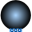

VesselsDevices for storing fluid |
|
Package Contents
|  |
Volume of fixed size, closed to the ambient, with inlet/outlet ports |
|
Simple tank with inlet/outlet ports |
|
|
Base classes used in the Vessels package (only of interest to build new component models) |